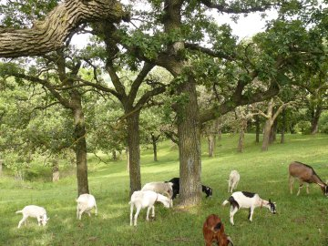

Our Goats
The goat herd is about 35 strong for the 2013 season. Only about one-half of these are milking goats-- the rest are fixed boys (wethers) kept as hiking buddies and for weed management on the farm. Goats can stay "freshened" for two years but the quantity of their milk falls significantly after about six months. As a result, our cheese business is seasonal typically going from April - November since we follow the natural cycle of the goats and breed in the fall with babies born in the spring.
Our goats get to roam the Loess Hills and are not confined. After milking, we go on a hike and they stay up on the ridge until about 4:00 PM when they come down on their own volition for tasty alfalfa hay. They are secured at night along with their Great Pyrenees guard buddies. The hikes provide us an opportunity for a close check-up on the health of the goats on a daily basis and we are all better for the exercise!
